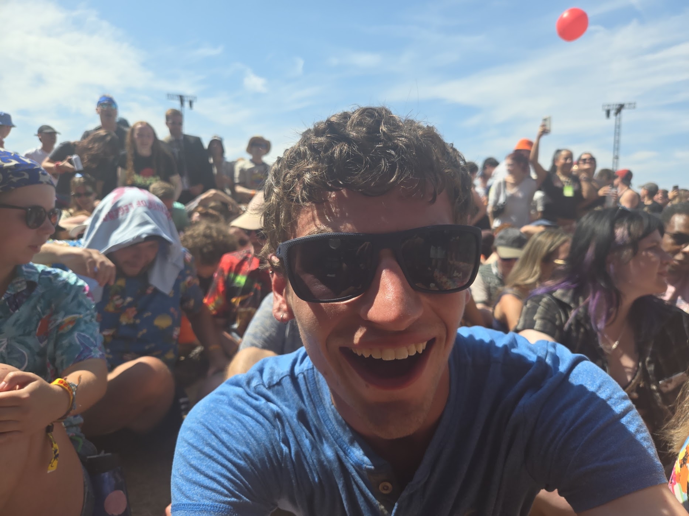

Colourways
Unreal EngineA small puzzle game developed in unreal engine, using real time texture painting combined with global shaders to allow you to uncover the world around you through paint and trial and error.

Third-Year Game Development Student
Focusing on gameplay programming and technical art. Primarily working in Unreal Engine, with experience in Unity and Raylib.
A small puzzle game developed in unreal engine, using real time texture painting combined with global shaders to allow you to uncover the world around you through paint and trial and error.
Character mechanics, responsive camera controller, and shader graph experiments in Unity.
Custom game loop, physics integration, and rendering pipeline exploration built with C and Raylib.